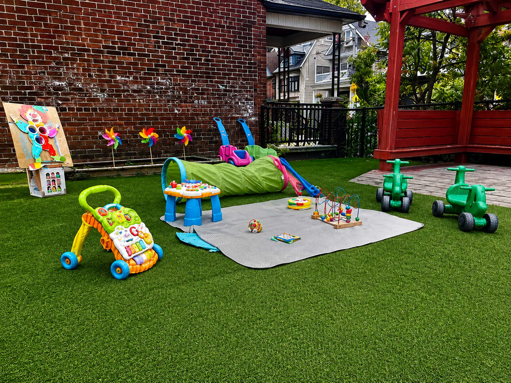

Our values
Warmth, respect, belonging, curiosity, and trust guide daily decisions.
About us
Children’s Circle Daycare has supported children and families for over 50 years with nurturing, inclusive, play-based care.

Leadership
Executive Director
Michelle Strople is proud to lead Children's Circle Daycare with a commitment to providing a safe, nurturing, and inclusive environment where every child feels valued and every family feels welcomed.
Together with our dedicated educators and staff, Michelle is committed to supporting high-quality early learning experiences that help children grow with confidence, curiosity, and kindness.
Contact MichelleLeadership
Program Director
Karen Farrell leads the educational programming at Children's Circle Daycare and works closely with our educators to ensure every classroom provides engaging, high-quality learning experiences.
She mentors and supports our teaching team, helps implement our play-based philosophy and How Does Learning Happen?, and guides staff in creating nurturing, inclusive environments where every child can learn, grow, and thrive.

We believe children learn through relationships, exploration, and meaningful play. Educators create calm routines and engaging environments where children can build confidence, practise kindness, and follow their curiosity.

Warmth, respect, belonging, curiosity, and trust guide daily decisions.
Our team supports social, emotional, physical, and cognitive growth through responsive care.
Families are partners. Communication is clear, practical, and centred on each child.